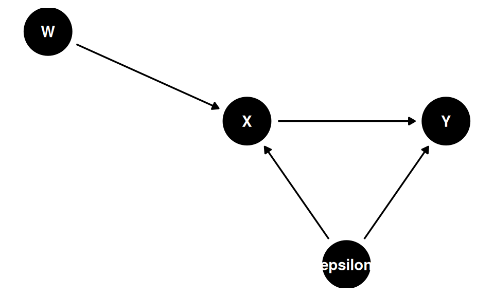
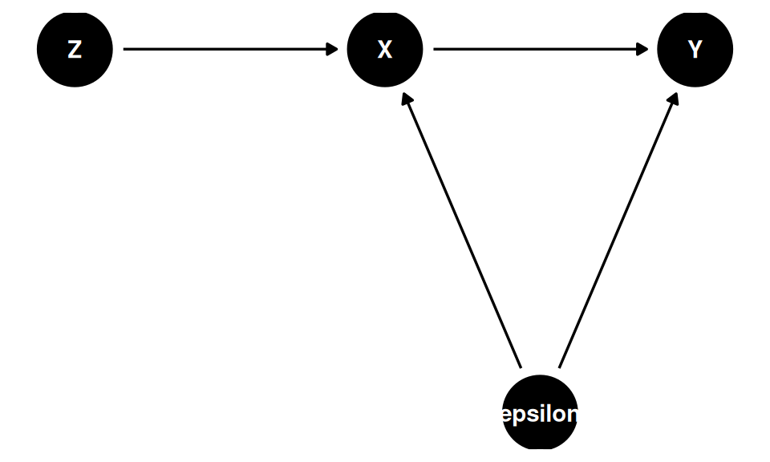

Code
dag_endog <- dagify(
X ~ W + epsilon,
Y ~ X + epsilon,
latent = "epsilon",
coords = list(
x = c(W = 0, X = 1, Y = 2, epsilon = 1.5),
y = c(W = 0.5, X = 0, Y = 0, epsilon = -0.8)
)
)
ggdag(dag_endog) + theme_dag()
Aula 7
I started by asking the Google’s AI what an instrumental variable actually is. The answer was the following:
An instrumental variable (IV) is a statistical tool used to estimate causal relationships when the independent variable is correlated with the error term – a problem known as endogeneity. It acts as a “proxy” to isolate the variation in the explanatory variable that is unrelated to confounding factors, allowing for unbiased, causal estimation.
And there you see the characteristics of a good instrument [it should feel weird!]. It’s weird to lay person because a good instrument (two boys) only changes the outcome by first changing some endogenours treatment variable (family size) thus allowing us to identify the causal effect of family size on some outcome (labor supply). And so without knowledge of the endogenous variable, relationships between the instrument and the outcome don’t make much sense. Why? Because the instrument is irrelevant to the determinants of the outcome except for its effect on the endogenous treatment variable. You also see another quality of the instrument that we like, which is that it’s quasi-random.
The text explores the Instrumental Variables (IV) research design, which is used to identify causal effects in the presence of selection on unobservables, omitted variable bias, measurement error, and simultaneity.
Under the assumption of homogeneous treatment effects (where the causal effect is constant across all individuals), the IV estimator isolates the true causal parameter by relying on an instrument that satisfies two primary conditions. First, there must be a strong first stage, meaning the instrument is highly correlated with the endogenous variable. Second, the instrument must satisfy the exclusion restriction, meaning it is independent of the structural error term and unobserved confounders. The instrument must only affect the outcome variable via the mediated pathway of the endogenous variable (the “only through” assumption).
The most intuitive method for applying IV is the Two-Stage Least Squares (2SLS) estimator. 2SLS works by regressing the endogenous variable onto the instrument to obtain exogenous fitted values. By substituting the endogenous variable with these fitted values, 2SLS identifies the causal effect, though it sacrifices a significant amount of data variation. The text warns of the weak instrument problem: if the correlation between the instrument and the endogenous variable is weak (indicated by a low \(F\)-statistic), the finite-sample bias of the 2SLS estimator will gravitate heavily toward the OLS bias. Loading a model with too many instruments drives the \(F\)-statistic down and exacerbates this bias.
When shifting to heterogeneous treatment effects (where the treatment effect differs by individual), the text introduces potential outcomes notation and notes that valid identification requires five strict assumptions: 1. SUTVA: No spillovers between units. 2. Independence: The instrument is “as good as random”. 3. Exclusion Restriction: The instrument only affects the outcome through the treatment. 4. First Stage: The instrument affects the probability of treatment. 5. Monotonicity: The instrument weakly operates in the same direction on all units.
Under these assumptions, the population is partitioned into compliers, defiers, never-takers, and always-takers. The IV strategy estimates the Local Average Treatment Effect (LATE), which is the average causal effect specifically for the compliers—the subpopulation whose treatment status was directly altered by the instrument.
Finally, the text reviews three popular canonical IV designs: * Lottery Designs: Uses randomized experimental lotteries (like the Oregon Medicaid Experiment) as instruments for actual program take-up to cure selection bias. * Judge Fixed Effects (Leniency Design): Exploits the random assignment of decision-makers (such as bail judges) who possess varying propensities for strictness or leniency. Researchers often use the Jackknife Instrumental Variables Estimator (JIVE) to mitigate the finite-sample bias of many instruments. The exclusion restriction and monotonicity are uniquely vulnerable in this design. * Bartik (Shift-Share) Instruments: Used to instrument for an endogenous variable by interacting initial local shares with national shifts.
1. Omitted Variable Bias in OLS: When estimating the effect of schooling (\(S_i\)) on earnings (\(Y_i\)), unobserved ability (\(A_i\)) creates omitted variable bias. The true model and the shorter estimated model are:
\[ Y_i = \alpha + \delta S_i + \gamma A_i + \varepsilon_i \]
\[ Y_i = \alpha + \delta S_i + \eta_i \]
where \(\eta_i = \gamma A_i + \varepsilon_i\). Because \(S_i\) is correlated with \(A_i\), it becomes endogenous in the shorter regression.
2. The IV Estimator (Ratio of Covariances): With a valid instrument (\(Z_i\)), the causal parameter \(\delta\) can be isolated by dividing the covariance of the outcome and the instrument by the covariance of the endogenous variable and the instrument:
\[ \hat{\delta} = \frac{\text{Cov}(Y_i, Z_i)}{\text{Cov}(S_i, Z_i)} \]
3. Two-Stage Least Squares (2SLS): The first stage regresses the endogenous variable on the instrument to obtain exogenous fitted values (\(\hat{S}_i\)):
\[ S_i = \gamma + \beta Z_i + \epsilon_i \]
The second stage regresses the outcome on the fitted values to estimate the causal effect:
\[ Y_i = \alpha + \hat{\delta}_{IV} \hat{S}_i + u_i \]
which yields the equivalent expression:
\[ \hat{\delta}_{IV} = \frac{\text{Cov}(\hat{S}_i, Y_i)}{\text{Var}(\hat{S}_i)} \]
4. Weak Instrument Bias: In finite samples, if the first stage is weak (indicated by a low \(F\)-statistic), the 2SLS estimator is biased toward the OLS bias:
\[ \mathbb{E}[\hat{\beta}_{2SLS} - \beta] \approx \frac{\sigma_{\varepsilon\eta}}{\sigma^2_\eta} \cdot \frac{1}{F+1} \]
5. Heterogeneous Treatment Effects and LATE: When treatment effects vary by individual (\(\delta_i = Y_{1i} - Y_{0i}\)), IV estimates the Local Average Treatment Effect (LATE). This is the average causal effect for the “compliers” — those whose treatment status \(D_i\) was changed by the instrument \(Z_i\). Using the Angrist-Imbens notation, where \(D_{1i}\) and \(D_{0i}\) are the potential treatment statuses under \(Z_i = 1\) and \(Z_i = 0\) respectively:
\[ \delta_{\text{LATE}} = \frac{\mathbb{E}[Y_i(D_{1i}, 1) - Y_i(D_{0i}, 0)]}{\mathbb{E}[D_{1i} - D_{0i}]} \]
An equivalent and more intuitive expression is the Wald estimator applied to reduced-form and first-stage moments:
\[ \delta_{\text{LATE}} = \frac{\mathbb{E}[Y_i \mid Z_i = 1] - \mathbb{E}[Y_i \mid Z_i = 0]}{\mathbb{E}[D_i \mid Z_i = 1] - \mathbb{E}[D_i \mid Z_i = 0]} \]
6. Bartik (Shift-Share) Instrument: The Bartik instrument (\(B_{l,t}\)) predicts local endogenous variables (like immigration flows) by interacting initial local geographical shares (\(z_{l,k,t_0}\)) with aggregate national shifts (\(m_{k,t}\)):
\[ B_{l,t} = \sum_{k=1}^K z_{l,k,t_0} m_{k,t} \]
Summary of the Paper
This paper, “The Colonial Origins of Comparative Development” by Daron Acemoglu, Simon Johnson, and James A. Robinson, investigates the fundamental causes of the massive differences in per capita income across different countries. To explain this divergence, the authors propose a theory linking historical colonial strategies to modern economic development. Their argument relies on three central premises:
Relationship to Instrumental Variables
This paper is a landmark example of using an instrumental variable (IV) to solve an endogeneity problem in economics. The authors want to measure the causal impact of institutions on economic performance, but they cannot simply look at the correlation between the two using standard Ordinary Least Squares (OLS) regressions. Doing so creates several major problems: reverse causality (richer countries might simply be able to afford or choose better institutions), omitted variable bias (other unmeasured factors might cause both wealth and good institutions), and measurement error.
To isolate the true causal effect, the authors need a source of exogenous variation—a variable that strongly affects a country’s institutions but has no direct effect on its modern-day income. They use historical European settler mortality rates as their instrumental variable.
Here is how their instrumental variable strategy works:
By using settler mortality as an instrumental variable, the researchers perform two-stage least-squares (2SLS) estimates and find that institutions have a massively significant and large causal effect on a country’s income per capita. Furthermore, their IV approach proves that once you isolate and control for the effect of institutions, geographic factors like distance from the equator or being located in Africa no longer have an independent negative effect on economic performance.
Nessa aula, pela primeira vez, não falamos de controlar variáveis. Os DAGs mostram que mais controle não é necessariamente bom:
O problema surge quando o modelo não é identificável. Considere o DAG abaixo, em que \(\varepsilon\) (não observado) afeta tanto \(X\) quanto \(Y\):
dag_endog <- dagify(
X ~ W + epsilon,
Y ~ X + epsilon,
latent = "epsilon",
coords = list(
x = c(W = 0, X = 1, Y = 2, epsilon = 1.5),
y = c(W = 0.5, X = 0, Y = 0, epsilon = -0.8)
)
)
ggdag(dag_endog) + theme_dag()
Nesse setup, estimar \(Y = \hat{b}_0 + \hat{b}_1 X + \hat{\varepsilon}\) produz \(\hat{b}_1 \neq \beta_1\), pois \(X\) e \(\varepsilon\) são correlacionados. Para visualizar o viés:
set.seed(42)
n <- 10000
eps <- rnorm(n, mean = 0, sd = 1.5)
x <- 2 * eps + 10 + rnorm(n)
y <- -25 + 3 * x + eps # β1 = 3 (valor verdadeiro)
coef(lm(y ~ x))["x"] x
3.450735 O coeficiente estimado é sistematicamente diferente de 3 — não por variação amostral, mas porque \(\hat{b}_1\) captura um efeito misturado do erro com o efeito causal real.
A solução é introduzir um instrumento \(Z\) que afeta \(X\) mas é exógeno ao sistema — não correlacionado com \(\varepsilon\). No DAG abaixo, \(Z\) e \(\varepsilon\) são exógenos; \(X\) e \(Y\) são endógenos:
dag_iv <- dagify(
X ~ Z + epsilon,
Y ~ X + epsilon,
latent = "epsilon",
coords = list(
x = c(Z = 0, X = 1, Y = 2, epsilon = 1.5),
y = c(Z = 0, X = 0, Y = 0, epsilon = -0.8)
)
)
ggdag(dag_iv) + theme_dag()
Os caminhos causais de \(Z\) para \(Y\):
| Caminho | Status |
|---|---|
| \(Z \rightarrow X \rightarrow Y\) | Aberto (causal) |
| \(Z \rightarrow X \leftarrow \varepsilon \rightarrow Y\) | Fechado (\(X\) é collider em relação a \(\varepsilon\)) |
\(Z\) não é uma variável de controle — é uma variável exógena que resolve o problema de identificação ao isolar a variação em \(X\) que é independente de \(\varepsilon\).
Como \(Z\) afeta \(Y\) apenas via \(X\), vale a relação:
\[ \beta_{zy} = \beta_{zx} \cdot \beta_{xy} \]
Seja o modelo estrutural \(Y = \alpha + \beta_{xy} X + \varepsilon\), com \(\text{Cov}(Z, \varepsilon) = 0\) (restrição de exclusão). Então:
\[ \begin{align*} \text{Cov}(Z, Y) &= \text{Cov}\!\left(Z,\, \alpha + \beta_{xy} X + \varepsilon\right) \\ &= \beta_{xy}\,\text{Cov}(Z, X) + \text{Cov}(Z, \varepsilon) \\ &= \beta_{xy}\,\text{Cov}(Z, X) \end{align*} \]
Dividindo por \(\text{Var}(Z)\):
\[ \underbrace{\frac{\text{Cov}(Z,Y)}{\text{Var}(Z)}}_{\beta_{zy}} = \beta_{xy} \cdot \underbrace{\frac{\text{Cov}(Z,X)}{\text{Var}(Z)}}_{\beta_{zx}} \]
Portanto \(\beta_{zy} = \beta_{zx} \cdot \beta_{xy}\), e isolando o parâmetro de interesse:
\[ \beta_{xy} = \frac{\beta_{zy}}{\beta_{zx}} \]
Os três passos práticos:
Passo 1: \(\text{lm}(X \sim Z)\) \(\;\Rightarrow\;\) \(\hat{b}_{zx} = \dfrac{\text{Cov}(Z, X)}{\text{Var}(Z)}\)
Passo 2: \(\text{lm}(Y \sim Z)\) \(\;\Rightarrow\;\) \(\hat{b}_{zy} = \dfrac{\text{Cov}(Z, Y)}{\text{Var}(Z)}\)
Passo 3: O estimador IV é a razão:
\[ \hat{\beta}_{IV} = \frac{\hat{b}_{zy}}{\hat{b}_{zx}} = \frac{\text{Cov}(Z, Y)}{\text{Cov}(Z, X)} \]
Se não tivermos uma regressão simples, basta usar as versões “parcializadas” de \(X\), \(Y\) e \(Z\) — isto é, os resíduos após controlar pelas demais covariáveis.
Relevância: \(\text{Cov}(X, Z) \neq 0\) — o instrumento deve ser correlacionado com a variável endógena
Restrição de exclusão: \(Z \perp\!\!\!\perp Y \mid X\) — \(Z\) afeta \(Y\) apenas via \(X\); não há caminho direto de \(Z\) para \(Y\)
Estabilidade (não é condição de identificação, mas de precisão): \(|\text{Cov}(X, Z)| \gg 0\) — evita o problema de instabilidade dos instrumentos fracos. Quando \(\text{Cov}(X, Z) \approx 0\), variações amostrais na covariância alteram o estimador drasticamente:
\[ \frac{\text{Cov}(Z,Y)}{\text{Cov}(Z,X)} = \frac{10}{0.001} = 10\,000 \quad \text{vs.} \quad \frac{10}{-0.002} = -5\,000 \]
Os pressupostos do OLS são: (1) linearidade, (2) i.i.d., (3) \(X^\top X\) inversível, (4) \(X^\top\varepsilon = 0\) (exogeneidade — \(X\) é independente do erro populacional). No setup de variáveis instrumentais, sabemos que IV(4) não vale: \(X^\top\varepsilon \neq 0\). Precisamos de pressupostos adicionais:
| IV(3) | \(Z^\top X\) é inversível |
| IV(4) | \(X^\top\varepsilon \neq 0\) — endogeneidade (sabida) |
| IV(5) | \(Z^\top\varepsilon = 0\) — restrição de exclusão |
| IV(6) | \(Z^\top X \neq 0\) e \(Z^\top Y \neq 0\) — relevância |
A derivação do estimador matricial segue da equação estrutural \(Y = X\beta + \varepsilon\):
\[ \begin{align*} Z^\top Y &= Z^\top X\beta + \underbrace{Z^\top\varepsilon}_{=\;0\;\text{por IV(5)}} \\ &= Z^\top X\hat{\beta} \end{align*} \]
\[ \boxed{\hat{\beta}_{IV} = (Z^\top X)^{-1}Z^\top Y} \]
Todos os pressupostos de identificação são necessários para isolar \(\hat{\beta}_{IV}\): IV(3) garante que \((Z^\top X)^{-1}\) existe, IV(5) zera o termo de erro, e IV(6) assegura que \(Z^\top X \neq 0\).
Em R:
beta_iv <- solve(t(z) %*% x) %*% t(z) %*% y